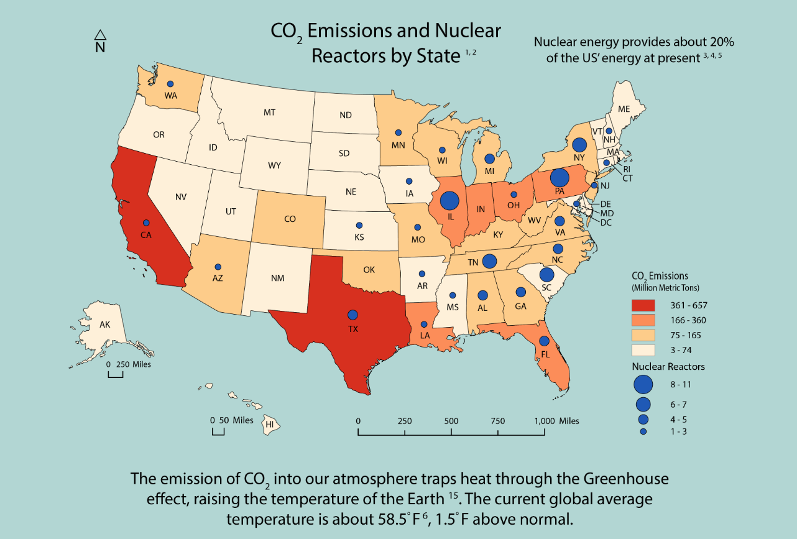
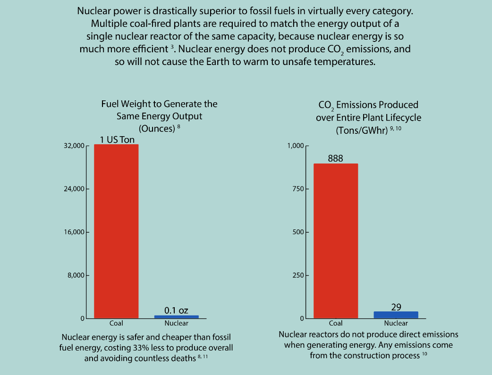
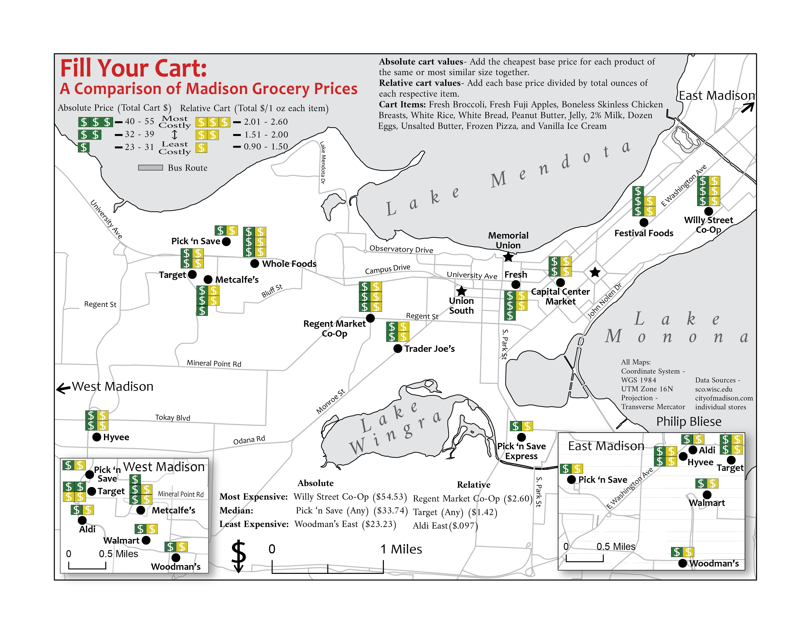
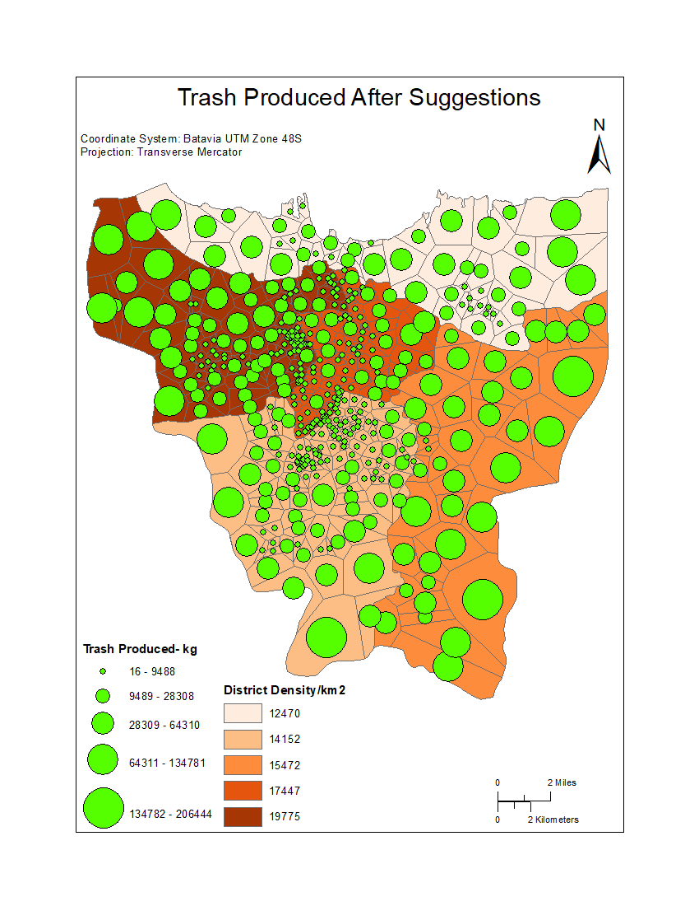
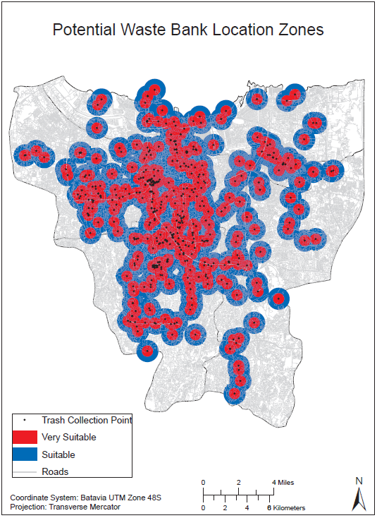
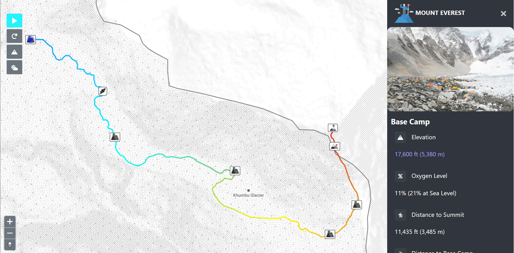
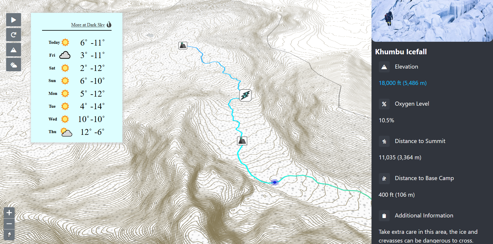

TEST TEST TEST Bio here -- I am Philip, a masters student at the University of Wisconsin- Madison, interested in geospatial data and visualization.
Ever since I was young, I've been interested in geography as a general discipline.
My AP Human Geography class in high school was an extremely formative time, paving the way for my college career and professional path.
It was there that I really got invested in geography, and learned about GIS, which thus eventually led to my time at the UW.
I hope to help move the world forward, both in terms of compiling and analyzing geospatial data, as well as by representing it through maps and other visualization.
Through maps, we can show the world as it's been, as it is, and how it could be.
Maps can be a driving force for change, galvanizing the people to action, when they are created effectively.
I strive to always be an effective creator, an effective analyzer, so that the world may have a brighter future.
Thank you for viewing this page, and I hope you will also work towards a better tomorrow.


Nuclear Power is an extremely underutilized energy source. These are selected portions of a persuasive infographic, which is intended to educate readers about the benefits of nuclear power, compared to fossil fuels.
It utilizes both maps and graphics to make this argument in a push for a greener tomorrow. The infograph can be viewed in its entirety here.

Food is a necessity for everyone, but many are on a budget, especially college students.
This project assists students, and others, in Madison to make economic choices when shopping for groceries by identifying those stores that have consistently good prices, and those that are more expensive.


These maps are outputs from a team project I worked on focusing on the problem of waste management in Jakarta, Indonesia.
By analyzing how much trash was produced in the city, and where people produced it, we determined which trash collection locations were under the greatest strain.
From there, we were able to suggest additional trash collection locations to ease the strain and manage the waste more effectively.
We also determined where additional Waste Banks could be located to better manage recycle, cleaning up the environment and bolstering the economy.
The full report can be seen here.


These images are of an interactive Everest map I assisted my team in the creation of.
It depicts the ideal climbing route along the South Col route, from base camp to the summit, detailing important points along the way, such as camp locations and terrain features.
This map is intended to be both educational to those who wish to learn more about climbing the tallest mountain in the world, as well as inform and assist those preparing for the ascent.
Interactive features to assist these goals include pan and zoom functions, elevation isolines, route animation, current weather conditions, and several other features.
TESTING TESTING TESTING
{kind=link}